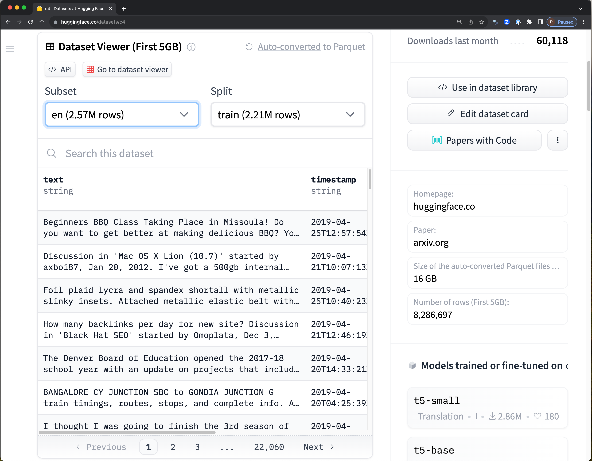
4 Marine Genetic Resources on the Web
Introduction
In this section we explore the appearance of marine genetic resources on the internet. The internet is a primary source of public information about marine organisms, compounds and products. However, as of January/February 2023 there are approximately 3.15 billion publicly accessible web pages corresponding with 400 Terabytes of data that are archived by the non-profit Common Crawl. This figure only includes publicly available web pages and does not include those that are in some way protected (e.g. requiring a username and password or not indexed by search engines).
The challenge therefore is to identify useful information on marine genetic resources from ABNJ, particularly information relating to commercialisation, in a structured way.
In this section we explore different resources and approaches that can assist with enhancing transparency on the utilisation of marine genetic resources in general and marine genetic resources from ABNJ in particular. In doing so, we highlight two recent examples. The first of these is the existence of the Common Crawl as an open access archive of the public internet that is widely used to train Large Language Models such as ChatGPT, Gemini, Claude and many others. Second, we explore the opportunities to automate monitoring of activity involving marine genetic resources at scale represented by combining traditional web research techniques with the AI models to create specialised research agents for specific tasks. We note that the increasing availability of public snapshots of the internet for research purposes presents major opportunities for enhancing transparency on the utilisation of marine genetic resources from ABNJ. However, the challenges involved in interrogating web data at scale, and across multiple languages, mean that these opportunities will be best realised through the assistance of AI models. This in turn will raise questions on how to ensure best practice in:
The use of AI models for research involving the public internet;
Developing methods and protocols to validate the accuracy of the information used to inform policy decision making.
We begin our analysis with a brief introduction to snapshots of the internet, the use of these snapshots in AI and the presence of the marine environment in web snapshot data.
Snapshots of the Web
The emergence of Large Language Models (LLMs) to public prominence from late 2022 onwards has led to questions increasingly being asked about the sources of training data that power the creation of these models. This can readily lead to the assumption that individual companies are involved in indexing and scraping the internet when in practice the majority of companies will use the public access Common Crawl.
Common Crawl is a US registered non-profit organisation that began collecting public web data from 2008 onwards and made its first release of a public snapshot in 2011 and as a public dataset hosted by Amazon Web Services (AWS) in 20121. While the Common Crawl itself is released under a public domain waiver it contains copyrighted material. In the United States use of the Common Crawl can be considered under the protected principle of fair use doctrine while the situation varies in other jurisdictions. Recent legal cases involving copyright and Large Language Models trained on the Common Crawl are likely to clarify the situation in a number of different jurisdictions.
The Common Crawl is an example of a widespread practice known as web scraping, exemplified by the work of large companies such as Google in indexing the internet to power search engines and the practices of specialised companies such as market research companies in providing specialist services. Our ability to rapidly find information on the internet would not exist without website indexing and associated scraping of web pages.
However, the scraping of web pages also involves a number of concerns, such as obtaining confidential or personal information (e.g. by accessing specific or protected areas of web sites without permission or harvesting the names of persons from public sites). In response, there are a number of now long standing practices that facilitate the use of web pages in a responsible manner for responsible purposes. The first of these is that activity should be focused exclusively on public pages, rather than seeking to ‘hack’ protected areas of sites. The second is to respect the contents of the ‘robots.txt’ file used by webmasters to indicate the areas of sites that are open for indexing by search engines and those that are closed (expressed through “nofollow” tags). The third factor relates to ensuring that the purpose of the activity is both legal and legitimate. For example, obtaining factual information from web pages constitutes a legitimate and legal use. However, obtaining information on individual persons without their consent would generally not be a legitimate or legal purpose. Finally, many websites contain terms and conditions that should be respected where possible while noting that in the absence of a ‘robots.txt’ it is generally impractical to review terms and conditions for research conducted on a large volume of websites.
The Common Crawl expresses these principles in its terms of use. In other circumstances offices for national statistics have developed policies that include the above elements, such as the EU’s current work in progress, WPC ESSnet Webscraping policy draft to guide activities within the European Statistical System (ESS). The authors of the current research adhere to these principles and practices, notably in relation to respecting the ‘robots.txt’, not collecting data outside the scope of the project (such as personal information) and not retaining the raw data.
Web scale snapshots from the Common Crawl include the whole panoply of information available on the public internet and will include information that will be racist, offensive or discriminatory. The use of such data to train AI models has been a significant focus of ongoing concern. However, in recognition of these issues, companies within the AI space have also sought to improve the data available for training models by identifying and removing such materials.
A second factor in the use of internet web snapshots within the AI community is the problem of scale. As noted above the Common Crawl snapshots involve billions of web pages and are hundreds of terabytes in size. This makes its use at scale impractical for many potential users. In response to these issues, in late 2019 a research team at Google released a cleaned up snapshot in the form of the Colossal Crawl C4 dataset. The dataset used a procedure to remove pages containing offensive terms and also sought to remove the vast swathes of duplicate pages and pages consisting purely of code that dominate the Common Crawl snapshots. The Colossal Crawl dataset was used to train the Google T5 series of AI text generation and language translation models (Raffel et al. (2019)). The growing importance of cleaned web scale data to AI as a field has led to increasing efforts to release cleaned up snapshots for wider use2.
The growing availability of pre-cleaned web scale snapshot for training Large Language Models also presents opportunities for research teams to access cleaned up datasets for fact based research. We chose to explore the web scale C4 dataset for marine genetic resources as our starting point and as a basis for understanding what the options might be for updating the data in future as new snapshots and new methods become available.
Methodology
The C4 dataset is publicly available for download either through the TensorFlow datasets site or through HuggingFace (the main online hub for AI models and datasets) courtesy of work by the Allen Institute for AI and available at https://huggingface.co/datasets/c4. The snapshot is divided by language name and also subdivided by whether the data is clean or raw. To our knowledge, web scale data has not previously been explored for biodiversity and genetic resources and we initially focused our attention on English language web texts in the English clean dataset (“en.clean”).
The English clean dataset consists of 364,978,294 million web pages consisting of a url hyperlink for the source page and the text of the page. It is 806 gigabytes in size. The cleaning and deduplication process undertaken by the team at Google radically reduces the size of the data from over 6 terabytes and makes it considerably easier to work with.
Figure 66: A View of the C4 open access dataset on the Hugging Face AI hub
The identification of marine genetic resources in a dataset of this size can be likened to finding a needle in a haystack. To approach this task our strategy has been to:
Break the web texts into individual words and phrases removing common stopwords (known as tokenizing);
Identify web pages that contain common marine related terms (marine, sea, seas, ocean, oceans and so on);
Use a dictionary of words and phrases for products (cosmetics, pharmaceuticals, nutraceuticals etc.) constructed from text mining the International Patent Classification to identify marine web pages that also contain product terms;
Based on the outcomes to narrow the dataset down to specific areas (e.g. compounds, cosmetics, cosmecueticals, enzymes, krill, pharmaceuticals etc);
Construct a ‘fishing net’ dictionary of marine terms (using the work conducted for the scientific and patent data discussed above);
Identify product related words in web pages (cosmetic, pharmaceutical, cosmeceutical, nutraceutical and so on);
Identify marine related terms in the texts containing product terms (co-occurrences) using the marine fishing net. This includes the use of frequency scores for the marine terms to identify highly relevant texts;
Retrieve the full texts from step 5 where the texts contain both a product and a marine related term;
Use a machine learning model for named entity recognition on the texts and the identification of products as the basis for further analysis.
Tokenizing Web Texts
In the initial step the 364 million web pages are split into individual words (tokens). Common stop words (e.g. ‘and’, ‘or’ etc.) are removed. Processing is performed in Apache Spark which is widely used for memory efficient large scale parallel processing of texts. Apache Spark can be used with common data science programming languages such as Python using pyspark or R using sparklyr. The code below is written in R with the sparklyr package and assumes that a user already has a Spark cluster running.
library(tidyverse)
library(sparklyr)
c4_en <- spark_read_json(sc, "c4_tbl", path = "en/*", memory = FALSE)
spark_unigram <- function(df) {
df_tok <- df %>%
ft_tokenizer(
input_col = "text",
output_col = "word"
) %>%
ft_stop_words_remover(
input_col = "word",
output_col = "word_clean"
) %>%
mutate(word = explode(word_clean)) %>%
mutate(nchar = nchar(word)) %>%
select(url, word) %>%
mutate(ngram = trim(word))
}
c4_en_words <- spark_unigram(c4_en)This process produced a data table with 69,838,178,742 or ~69.8 billion words and the associated urls for each word. The same exercise was performed to identify two word phrases (bigrams) and produced a table with 77,158,645,013 or ~77 billion phrases. It is possible to expand this approach (for example to three word phrases and so on) but this was deemed sufficient for the immediate purpose.
One challenge in approaching 69.8 billion words from 354 million web pages is how to narrow the focus to those pages that involve the marine environment and products, and from there, attempting to isolate marine genetic resources from ABNJ. There are two possible options for this. The first is to identify all web pages in the data that mention some kind of product, accompanied perhaps by words such as “checkout”, “shopping basket” and related terms. This first approach would seek to capture all web pages within the C4 dataset that mention some kind of product and from there narrow the focus down to the marine environment and ABNJ. An alternative approach would be to start by narrowing the data to a set of marine terms and then identify product related terms in the web pages that contain the marine terms.
When dealing with data at the level of billions of items one important challenge is data handling. After a period of experimentation with the first approach we opted for the second approach as it was more practical within the project timeline.
A High Level Overview
We can begin to explore the data in a straightforward way by seeking to count up the number of pages that contain individual words such as ‘marine’. In total we identified 19.6 million occurrences of the selected marine terms in 9,961,171 distinct web pages. The terms in Table 9 are counts of the number of occurrences of terms in the c4 dataset and have been aggregated (e.g. ‘sea’ and its plural ‘seas’ have been aggregated to the singular ‘sea’).
Table 9: Occurrences of Marine Terms in Web Pages in English
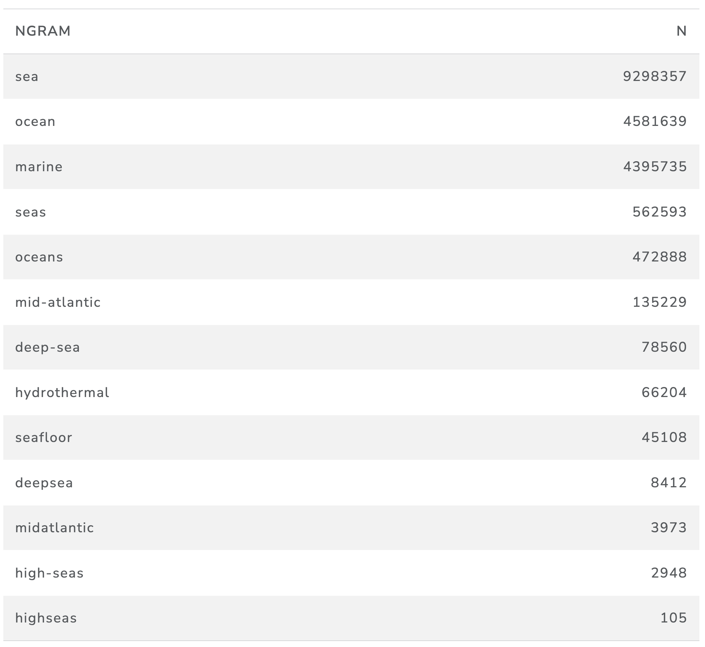
As we might expect, the terms ‘sea’ and ‘ocean’ rank top in terms of occurrences with terms like ‘deep sea’ and ‘hydrothermal’ ranking lower. Note here, that some terms can be expressed either as a single term (e.g., ‘deepsea’ or ‘deep-sea’) or as a two-word phrase (‘deep sea’). We focus here purely on single terms. In other cases, such as ‘hydrothermal’, the term will cover the full spectrum of uses of a term (e.g. ‘hydrothermal energy’ and ‘hydrothermal vents’) rather than being confined to a marine use.
We can gain an insight into the uses of these terms in websites by counting up the main or base domains for the sites as set out in Table 10.
Table 10: Counts of Web Pages for a Selection of Marine Terms for English Websites (top 10 only)
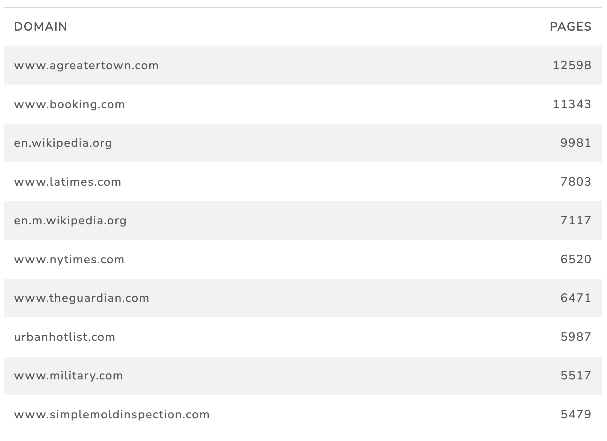
What we see here is therefore, for websites in English, the full spectrum of sites that address the marine environment of which ABNJ is a part. At the top level we see encyclopaedia sites such as Wikipedia, journals such as PLOS One, a US community marketing site (agreatertown.com), an information site for the US military, trade sites for sales of yachts and boats (www.tradeonlytoday.com), newspapers such as the LA Times (latimes.com) and yachting and nautical map sites (such as geogarage and gpsnauticalcharts.com). In short, analysis of this type, while currently confined to English sites, allows us to gain a sense of the full spectrum of human uses of marine and ABNJ related language.
The increasing ability to conduct analysis at this level has important implications for understanding human relationships and perceptions of the marine environment and ABNJ and to evaluate public awareness of international policy measures and their effectiveness. On a wider level, the ability to conduct this type of analysis has implications for the evaluation of the effectiveness of the High Seas Treaty. However, there are two important constraints to conducting analysis at this kind of scale, and across multiple languages. The first of these is computational, in terms of the compute power required. While the issue of compute can be overcome through the allocation of more resources it is here that we encounter a second issue. That is, the ability to extract meaningful information in a timely way to inform policy debates and decision making on topics such as marine genetic resources. It is here, that the increasing opportunities for automation represented by AI could, with appropriate controls and validation, make an important contribution. Data at the level of individual words is useful for gaining a sense of the overall scale of human attention to the marine environment and ABNJ. Breaking texts down into individual words and the ability to assess those words mathematically in the contexts of the company those words keep, to borrow from Raymond Williams, is the foundation for Large Language Models in AI. However, analysis using individual phrases can assist with targeting analysis and navigating the sea of texts on the marine environment produced in human societies. For the present project we now narrow the focus to the exploration of phrases rather than the use of individual words. However, we return to words below, in the context of AI assisted approaches to interrogating web scale data.
A Marine Fishing Net
The outcome of the filtering process outlined above was a reduced set of 463,205 pages containing the marine terms and the product terms. In the next step, bearing in mind the noisy nature of this data as seen in the domain names above, we take the texts as is and split them into individual sentences. The aim of this process is a detailed analysis of the occurrence of terms in a ‘marine fishing net’ consisting of 176,496 marine taxonomic, common names and underwater place names that can be used to identify marine genetic resources as summarised in Table 14.
Table 14: Marine Organisms in OBIS
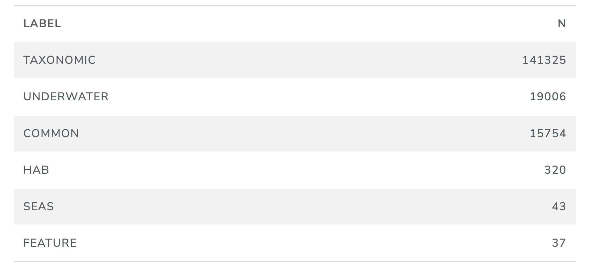
The fishing net was constructed in such a way that it can be used to capture individual words and two word phrases and, on that basis to be extended to capture longer phrases (tri-grams etc).
Splitting the data into sentences resulted in a total of 64,634,994 sentences from the 463,205 texts. In the next step we split each sentence into individual words and phrases. For example, for two word phrases there were just over 1 billion phrases (1,057,079,385). We then matched words (unigrams) and two word phrases (bigrams) against the marine fishing net of taxonomic, common names and place name terms.
The objective of this exercise was to identify sentences in the marine products texts that could be linked directly to a marine organism either through a taxonomic name or common name. We decided to focus specifically on the 2,033,247 sentences from 331,525 web pages that contained an ABNJ taxonomic name or a common name listed in OBIS in order to narrow the focus. Table 15 displays the top ranking terms across common names and taxonomic names in the product related pages based on frequency.
Table 15: Top Terms in Marine Product Pages by Page Count
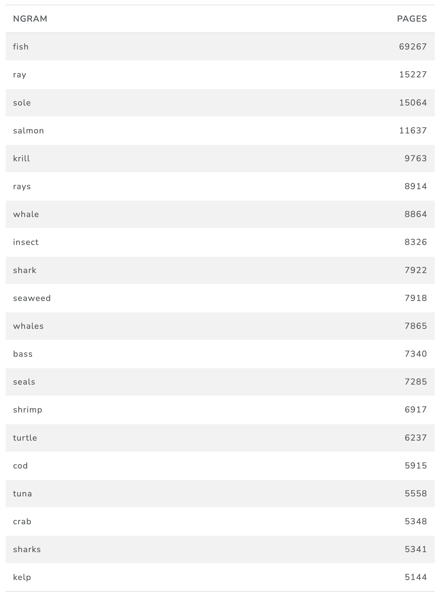
As we can see clearly in Table 15 counts by terms will commonly be dominated by single words. As we might expect Table 15 reveals that the word fish is dominant by a considerable margin. This is followed by references to salmon, krill, whales, rays, seaweed, sharks and shrimp, cod and corals (note that terms have not been aggregated in this figure to merge their plural and singular forms which will affect the rankings).
A more precise view begins to emerge when we focus on the common names of marine organisms involving phrases. Table 16 displays the top ranking common name phrases of approximately 2,527 common names in the data.
Table 16: Counts of Marine Organisms in Product Pages by Common Name (Phrases)
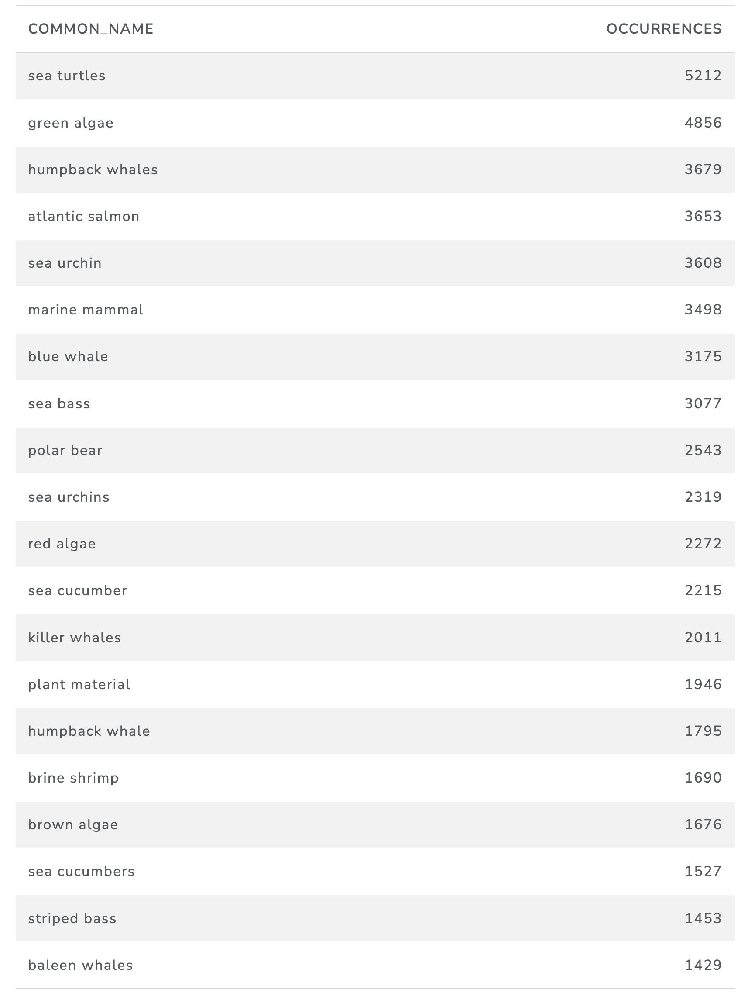
This begins to reveal some of the more charismatic marine species, notably marine mammals such as sea turtles, whales, polar bears as well as other organisms including algae, sea urchins, sea cucumbers and further down the list, crabs, whale sharks and other sharks, sponges, fish eggs and soft corals among others.
In terms of taxonomic names, we identified 1,224 taxonomic names in the ‘ABNJ only’ working dataset in the product category areas. The highest frequency was for krill (Euphausia superba), the Ocean Sunfish (Mola mola), the Norway Lobster (Nephrops norvegicus), the copepod (Calanus finmarchicus) and Crown of Thorns starfish (Acanthaster planci), the marine bryozoan (Bugula neritina), the Spiny Mudlark (Brissopsis lyrifera), the Boring Sponge (Cliona celata), the Brittle Star (Amphiura filiformis) and Blow lugworm (Arenicola marina), as shown in Table 17.
Table 17: Counts of Marine Organisms in Product Pages by Taxonomic Name
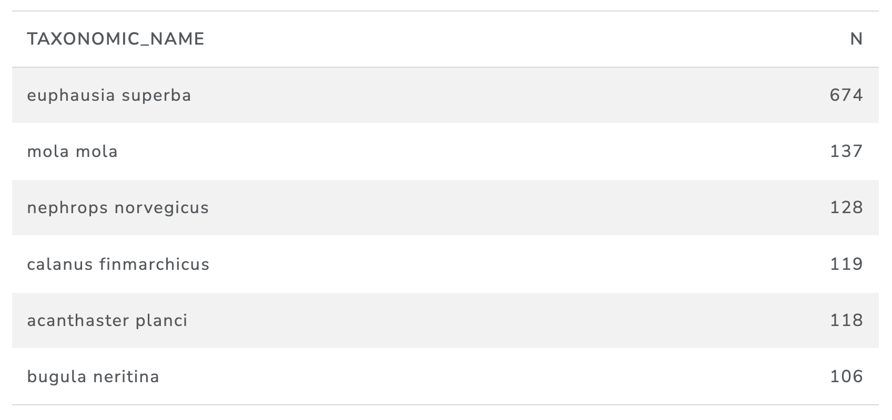
Counts of the frequency of occurrence of species in web pages linked to products give us an idea of the intensity of attention to a particular organism. However, when dealing with commercial web activity we also need to be aware of a practice known as ‘keyword stuffing’ or ‘keyword spamming’ where the metadata of a page is crammed with specific keywords in an attempt to secure a higher page ranking in a search engine3. For the wider marine dataset, this type of practice could explain the high rankings of sites such as the urban hotlist and the appearance of gambling sites. We therefore focus on page counts.
ABNJ Organisms and Product Pages
Figure 67 below displays the top ranking organisms from the working set of ‘ABNJ only’ organisms in the web data ranked on the number of pages. In Figure 67 we also observe counts of product pages linked to the organisms, the domains where the product related pages are published and finally the address (url) for the web page itself.
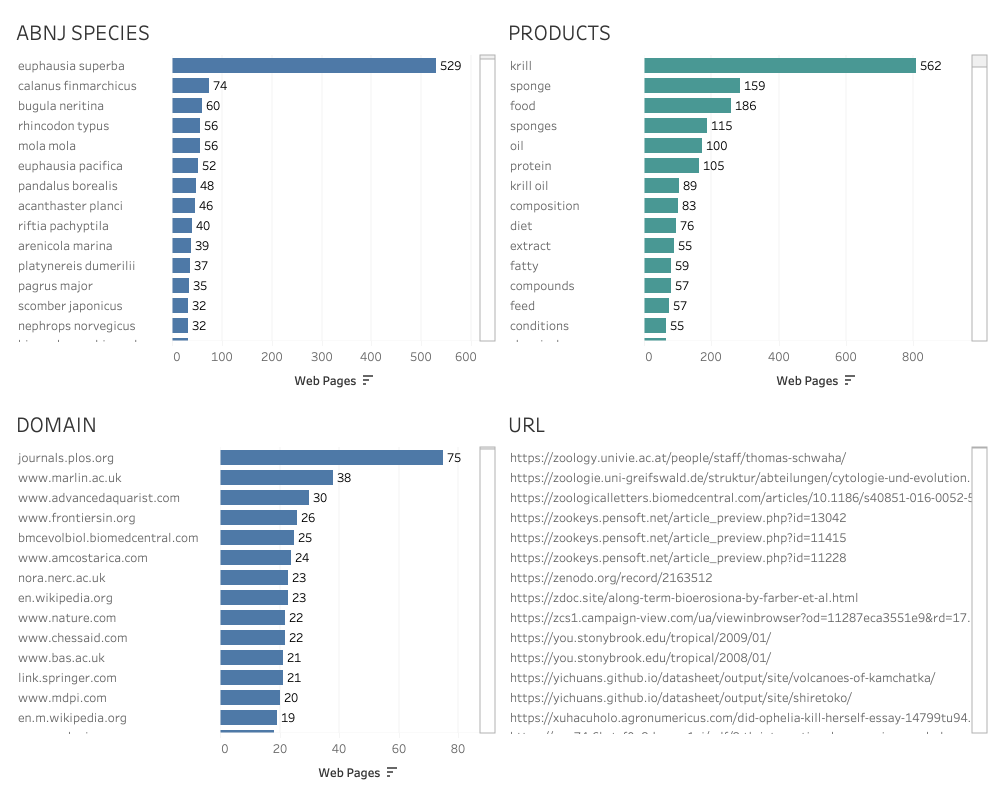
Figure 67: ABNJ Species and Products in Web Page Texts
Figure 67 reveals that overall, on taxonomic names, the data is dominated by krill (Euphausia superba). As we might expect, references to products are dominated by the common name krill followed by krill oil. In terms of domains where pages are hosted we can observe the dominance of academic and research sites as well as occasional commercial sites such as aquacave.com and bodykind.com which advertise sales of krill oil. The second ranked organism is the copepod Calanus finmarchicus which appears in connection with products such as Arctic Ruby Oil and fish feed. As this suggests, we are able to begin to explore the details of references to actual or potential products linked to organisms in ABNJ.
The Habitats & Features panel in the dashboard presented in static form in Figure 68 allows for the exploration of specific habitats and features recorded in web pages such as for hydrothermal vents. These references are almost entirely from research organisations.
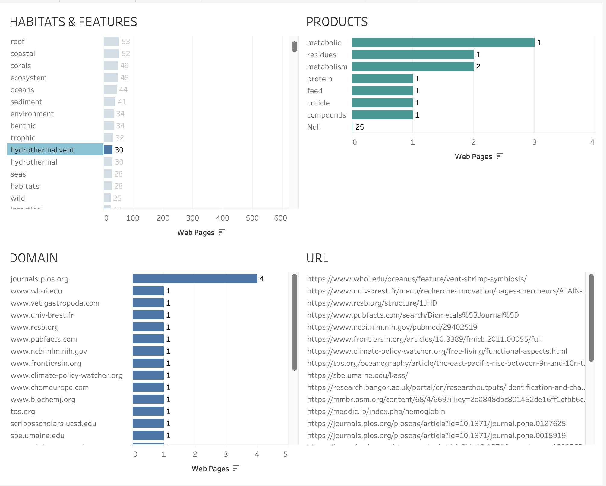
Figure 68: Counts of Pages Referencing Hydrothermal Vents and Products
The dashboard on named underwater places seeks to capture the named locations in texts containing an ABNJ recorded species and references to products and is provided in static form in Figure 69.
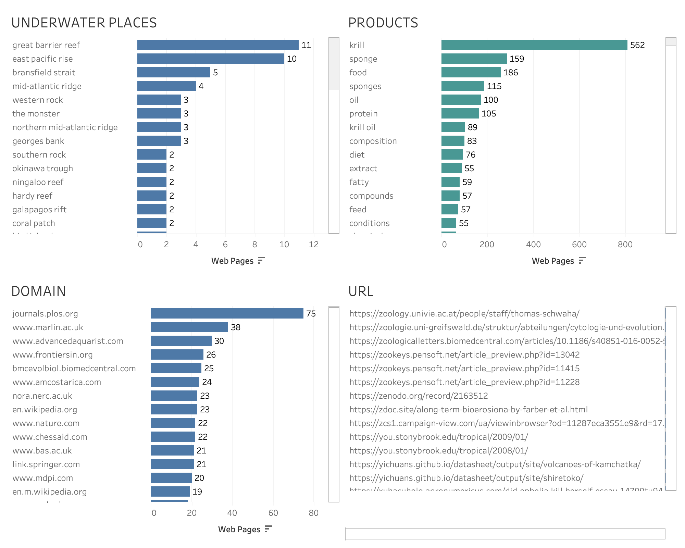
Figure 69: Counts of Pages Referencing Hydrothermal Vents and Products
Figure 69 makes clear that the top named location for species in our working ‘ABNJ only’ list is in fact inside national jurisdiction in the form of the Great Barrier Reef followed by the East Pacific Rise. In terms of domains and web pages the data is dominated by research institutions.
Patent Applicants
In the previous section we identified 3,531 raw names of patent applicants who were engaged in activity involving species within our working set of ‘ABNJ only’ species names based on taxonomic names in OBIS. We sought to establish evidence for research on or sales of commercial products arising from ABNJ associated species in web pages in the C4 web dataset.
Table 18 displays a selection of patent applicants and species names. Note that in many cases the ABNJ associated species name appears in the description section of patent documents and in a smaller number of cases appears in the claims section.
Table 18: Patent Applicants ABNJ recorded species in claims and filings
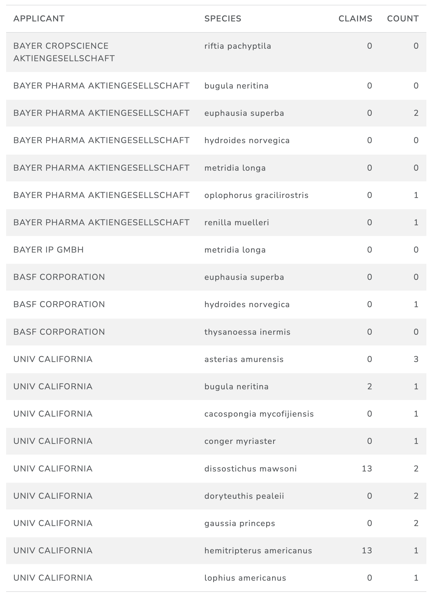
Table 19 presents a summary of the top species appearing in the patent documents.
Table 19: ABNJ associated species in patent documents
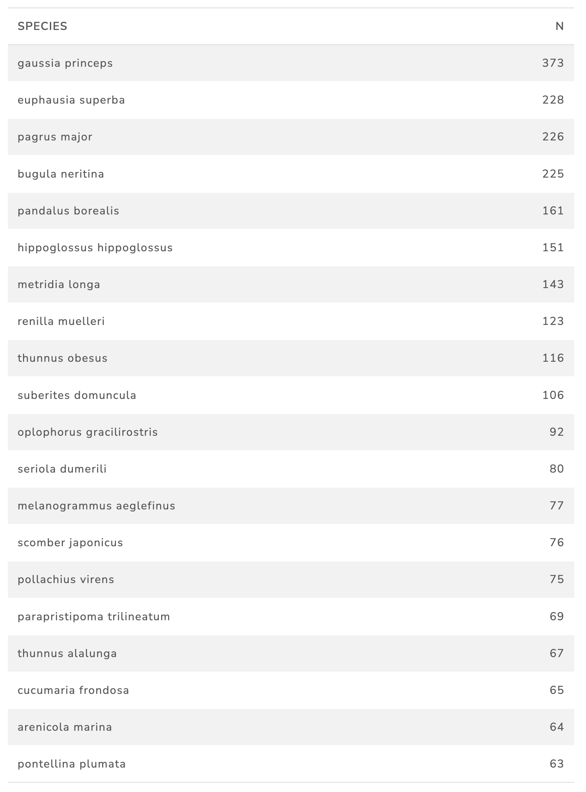
We will now test whether there is evidence of company sales of products arising from these organisms on company websites in the patent data.
To do that we adopted a multi step procedure:
We used an AI assisted ‘patent company to domain name matcher’ to identify the likely official domain names of the patent applicants. We identified a total of 809 domains from 3,531 patent applicant names4.
We mapped the domain names of the patent applicants onto the C4 dataset of two word phrases (ngrams). The results consisted of 592,882 individual pages from 809 domains broken down into 307,398,39 two word phrases.
We then identified those pages of the websites that contained an ABNJ associated species name that appeared in the patent document.
This procedure produced a list of 75 web pages for further analysis. Table 20 shows the 25 domains that matched to the ABNJ associated species that appeared in the patent documents. Note that only those domains in which we were able to identify a web page where a species is present are included in this table.
Table 20: Patent Applicants Pages Containing ABNJ related species (top 20)
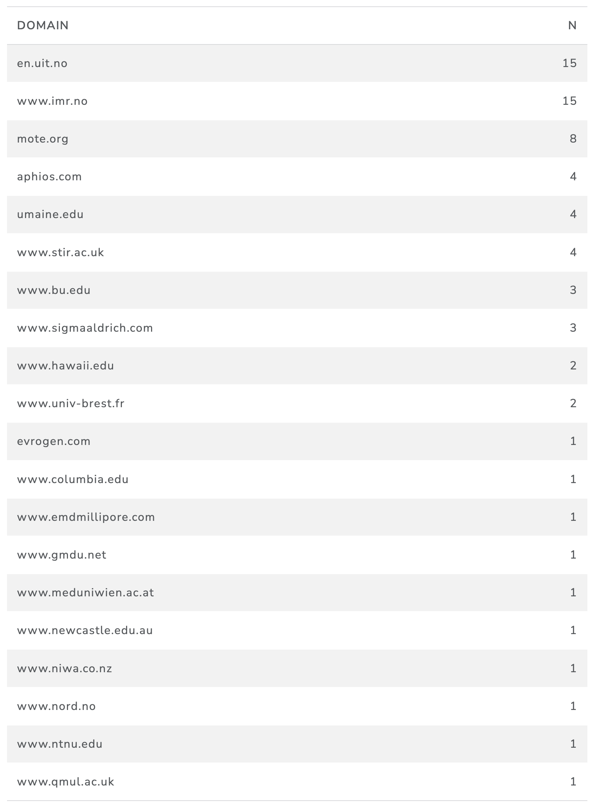
As we can see from the results in Table 20 which is ranked on the number of pages, the University of Tromso (UiT or the University of the Arctic) appears top followed by the Norwegian Institute for Marine Research, and the MOTE Marine Aquarium and Laboratory.
AI Assisted Web Research
In the analysis presented above we have presented the first known exploration of a web snapshot for marine biodiversity and commercial products linked to marine biodiversity. The increasing availability of open access web snapshots opens up opportunities to map out the presence of the marine environment on the public internet and to explore topics such as commercial products linked to marine organisms and ABNJ. Because web snapshots are clearly defined and time bound they provide important opportunities for methodological development that can be validated and improved over time.
A limitation of web snapshots as a data source is that the decisions made by the creators of snapshots may not always be entirely transparent or properly documented and their scale can make them challenging to handle. For the present research the C4 dataset has the limitation of a cut off point somewhere in mid-2019 but has the significant advantage of retaining the url for each page. In contrast, the more recent MADLAD snapshot from the Allen Institute for AI has the advantage of being more recent but does not retain the urls as identifiers thus limiting its utility.
However, looking forward, an important feature of Large Language Models (such as the Google T5 series) is that they are trained on web snapshots such as C4 or segments of such snapshots. As we have seen above, a web snapshot will typically include a wide range of sites including Wikipedia, news websites, journal sites and a host of other public internet sites. The instructions, or ‘prompts’ for these models can be rendered more precise to answer targeted questions and/or they can be ‘fine tuned’ to accurately answer specific types of question (based on known question answer pairs). In short, the emergence of AI tools opens up new opportunities to enhance transparency in relation to the marine environment in general and ABNJ in particular.
One of the emerging popular uses of AI models is as research assistants, particularly for web based research. Particular excitement in the AI community surrounds the ability for large (and small) AI models to automate accurate summarisation of texts. However, a key concern is the propensity of large language models to invent information or present incorrect or misleading information in a way that is not obvious to the non-expert reader. The propensity of Large Language Models to get things wrong is known as ‘hallucination’ within the AI community and arises in part from the generative nature of the models (which are trained to creatively generate texts). In other words, a strength of these models is also a weakness.
Considerable attention has been dedicated to ways to address this problem. One approach is to literally instruct a model not to make information up. A second is to adjust the ‘temperature’ of a model to reduce its creativity. A third approach is to attach a model to a knowledge base (known as Retrieval Augmented Generation or RAG) that serves as the exclusive source of truth for a model when generating answers. A fourth and complementary approach is to instruct a model to always provide the sources for the answers it gives. Combinations of these approaches, which are not mutually exclusive, are proving effective in tasks such as question and answer and summarisation. Ultimately, however, at present in this early stage in the use of AI automation, human review is required for model answers in order to validate AI generated answers.
A common pattern in research on marine genetic resources is a simple search using Google or a similar search engine. A human researcher then seeks to refine the terms to arrive at a more targeted set of answers and then manually reviews and summarises the results including the sources of the information in the research output. In practice, these common human research activities can be readily automated by creating a so-called ‘research agent’. The creation of research agents as a form of ‘research assistant’ is now becoming popular, a number of companies offer these services, and a range of tutorials are available online.
The creation of a research agent to work with the web involves a number of different services and steps. In brief, this involves:
Defining a set of queries (such as taxonomic names or compound names);
Signing up for services that allow for automated querying and retrieval of data from search engines (for example using Google cloud API services);
Signing up for an API key to access AI models programmatically (e.g. from OpenAI, Anthropic or a range of other companies) or the more advanced use of a locally hosted AI model;
A set of instructions (a prompt) for the model to perform when retrieving web results e.g. summarising with a particular aim;
A separate set of more detailed instructions for the model to perform when analysing the web results (such as extracting taxonomic and common names, summarising information on ecology and geographic distribution, or products that contain components of an organism) and the format for the output;
When working with web data at scale an Application Programming Interface programme (e.g. FastAPI) or similar is required
Finally, at the time of writing, the creation of a research agent requires programming knowledge but paid services such as those from OpenAI allow for the creation of types of research agent. As such, we anticipate that the use of these research agents will become more widespread as AI services expand and mature.
Identifying Commercial Products
We used a research agent as part of an exercise in identifying commercial products linked to species recorded in ABNJ. We chose to use the working set of 7,982 ‘ABNJ only’ taxonomic names for the test and ranked them on the number of occurrences. The working assumption behind this approach was that species recorded in ABNJ at higher frequency are more likely to have been a focus of commercial research and development than low frequency species. Table 21 shows the top ranked organisms.
Table 21: Working Set of ABNJ Only Organisms ranked by occurrence records
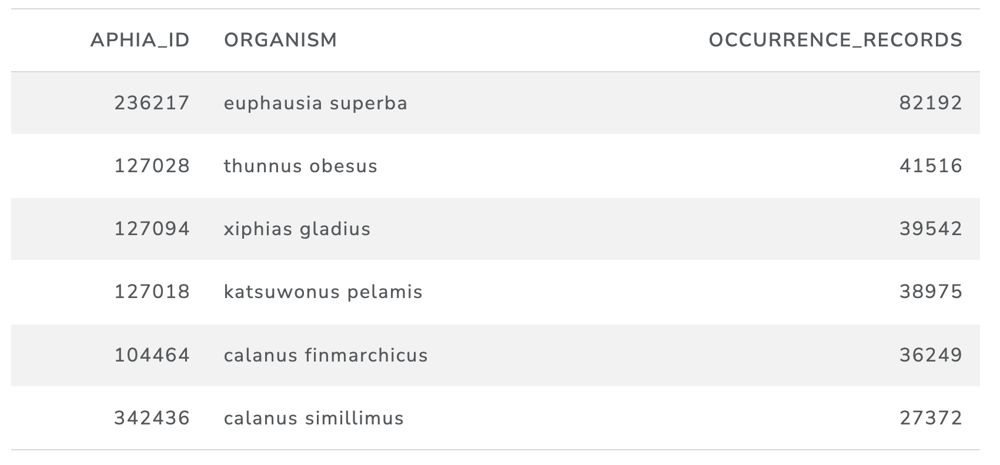
We then set the AI research agent the task of iterating over the first 1000 [currently 983] ranked organism names (including genus and above where relevant) to search for and identify whether a commercial product linked to the organism could be identified.
It transpires that defining what is, or is not, a commercial product is not as straightforward as it at first appears. At first sight, we can assume that a commercial product is a product that is sold on the market that is based on or contains elements of the organism of interest. However, how is an AI model to know what those elements are? In response to this we included the following draft definition in its instructions.
“You will recognise that commercial products include enzymes, luciferases, biotechnology, chemical compounds, cosmetics, pharmaceuticals, medicines, nutraceuticals, supplements, fisheries, foods and other products that are sold for profit”
As this makes clear, what is understood by a commercial product, could mean quite a number of things that could be articulated in different ways. Success in instructing a model depends on finding formulations that a model can understand when analysing material. For example, the use of the term biotechnology in the above instruction could be considered ambiguous.
A second issue in instructing a model involves a category that we might characterise as ‘potential’ products. In this category are compounds and other parts of an organism that are a focus of research for potential applications but are not as such marketed products. In an attempt to capture these potential products we included the following instruction.
“If you are asked to search for commercial products you know that some commercial products are potential products such as potential treatments for cancer or diabetes. You should include these even if there is no price.”
In an attempt to reinforce the importance of potential products we also included a shortened version of this instruction in the initial instruction for scraping and summarisation prior to analysis.
An additional objective was to obtain information on the prices of products on the market. Once again, while this could be considered to be straightforward it is in reality ambiguous when seen from the perspective of a Large Language Model. Given the possibility of multiple markets and multiple products, the behaviour of the model was to give an ambiguous answer.
The results are summarised in Table 22 focusing on organisms where the web search and summary suggested the existence of some form of actual or potential commercial product.
Table 22: ABNJ Only Organisms AI Agent Associates with Commercial Products
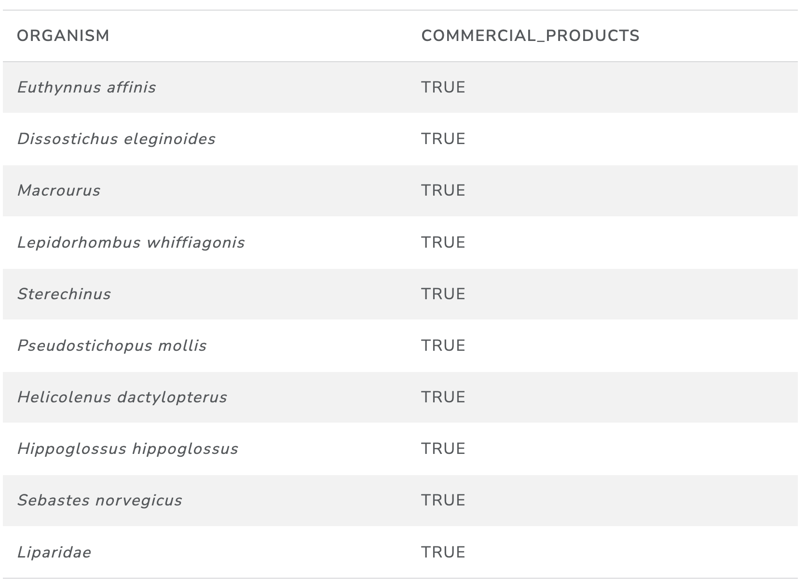
The model was asked to write a general summary for all of the species and also to ensure it provided references for all sources. The model was also asked to provide specific details of commercial products in cases where actual or potential commercial products could be identified. The results of this exercise are available in the Annex.
Of a total of 970 of the top occurring species names in our working dataset, a total of 839 (86%) were not associated with actual or potential commercial products and 129 (13%) of the total were associated with some form of commercial product.
Table 23 shows an example of a research summary for the Patagonian toothfish.
Table 23: Example of and ABNJ Only Species Associated with Commercial Products
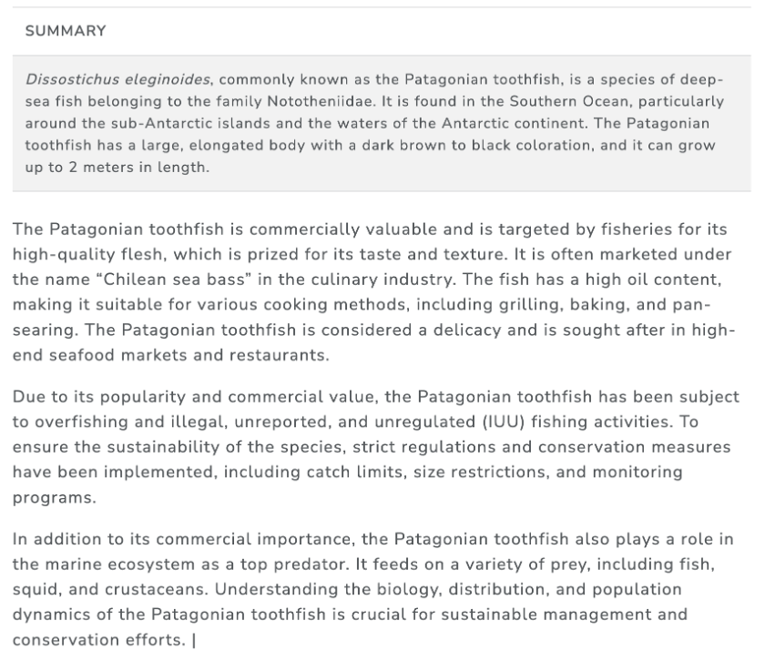
In addition to the generation of summaries, the model is also capable of providing details on commercial products. Table 24 shows an example of the details of commercial products for the Patagonian toothfish.
Table 24: Example of Species Associated with Commercial Products
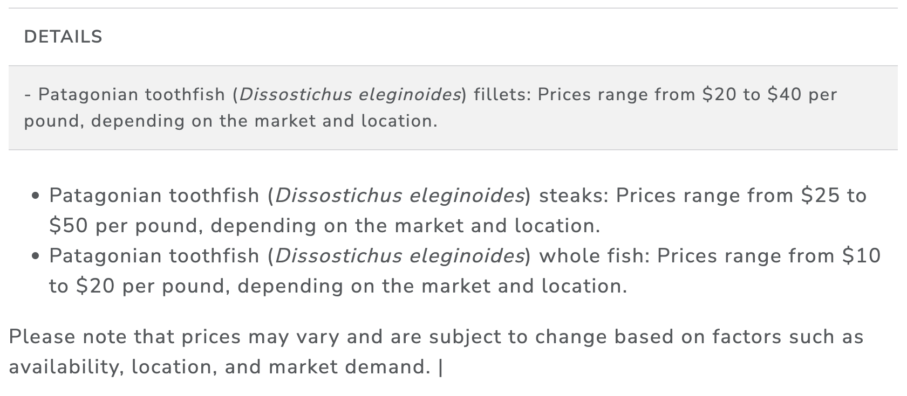
It is here however, that the nature of commercial products become relevant. At first sight, the majority of commercial uses referred to the use of an organism in commercial fisheries or in sports fishing rather than uses of a marine genetic resources as such. However, more detailed analysis of the results reveals a more complex picture involving a wider variety of uses.
Product Searches on Amazon
Patent documents give us an insight into the potential commercial uses of a biological organism, along with an indication of intent to commercialise such uses. The scale of patent activity can also be a useful indicator of the scale of commercial interest. However, while patent activity provides a perspective on commercial intent, patent activity only provides a limited insight into the commercial availability of products containing compounds from biological organisms. That is, patent activity cannot tell us definitively what actually makes it to market.
In order to bridge this gap, we sought to assess the extent to which we can determine the commercial availability of products containing compounds from marine organisms on the internet. We conducted an experiment using publicly available data from amazon.com, accessed via Rainforest API (https://app.rainforestapi.com/). An API, or Application Programming Interface, is a set of rules and protocols that allows different software applications to communicate with each other. APIs specify how software components should interact, enabling the sharing of data and functionalities across various applications. In the context of our work, the use of Rainforest API allowed us to collect results from Amazon web searches at scale, where otherwise searches might have to be completed manually one at a time.
The use of the amazon.com domain restricted results only to those which appear to consumers based in the United States and US territories like Puerto Rico. Along with amazon.com, it is possible to access 21 other domains using Rainforest API, from countries including Germany, India and Saudi Arabia. Limiting our experiment to the amazon.com domain was done in the interest of reducing time and cost. The products shown on amazon.com may be available to consumers from other regions, however, this often depends on the shipping choices of individual sellers. As such, the data presented must be seen as a scoping exercise, rather than a comprehensive overview of global market availability.
As this data is collected by creating searches on amazon.com, the API does not perform in the way that a traditional API might. Traditional APIs allow users to set clear parameters relating to what they expect to receive in their return, however, since this is not a typical API, it displays some unique characteristics. This can present challenges when attempting an information gathering exercise like the one attempted here, because it may mean that Amazon shows results which may not be directly relevant to the search term used. Many species names are not typical of the types of searches often conducted on Amazon. As a result, these may be considered as spelling mistakes to be corrected. It is possible to turn off spelling mistake correction in calls to the API, however, the issue of ‘fuzzy matching’ appears to be something that cannot be handled through the API. In cases where no direct matches are found for a search query, it may make business sense for Amazon to show users listings which match partially or vaguely on the search term. For example, searches for “eukrohnia hamata” produced results for ham products.
A further issue encountered was the apparent use of AI to generate product listings, this led to prints, and t-shirts containing images of obscure marine species to appear commonly in the listings. The challenge thus becomes how to filter through irrelevant listings to find listings in which products containing a marine organism may be being sold.
Within the current scope of our work, it would not be possible to search for any components or ingredients frequently known to originate from marine species. It is also commonly possible for such components to be obtainable from several different species. For our purposes, we restricted ourselves to attempting to find listings where either the species name or common name were found within the title, keywords, feature bullets and description of each listing.
We passed 4,000 marine taxonomic names to the Amazon API. Amazon listings were returned which matched in some way (as defined by Amazon) to our search terms. 31,864 listings were returned. This initial return contained information relating to title and price, information which may be seen on a “results” page when entering a search term. Table 25 below shows a preview of the original return. This initial return did not contain detailed information from the product page itself. In order to get more detailed information about a listing, the ASIN (Amazon Standard Identification Number) must be passed along to the API again, this creates a return which includes the product description and key words, allowing us more insight into the product, its usage and any relevance to marine organisms.
Table 25: Amazon Original search results
Attaching package: 'dplyr'The following objects are masked from 'package:stats':
filter, lagThe following objects are masked from 'package:base':
intersect, setdiff, setequal, union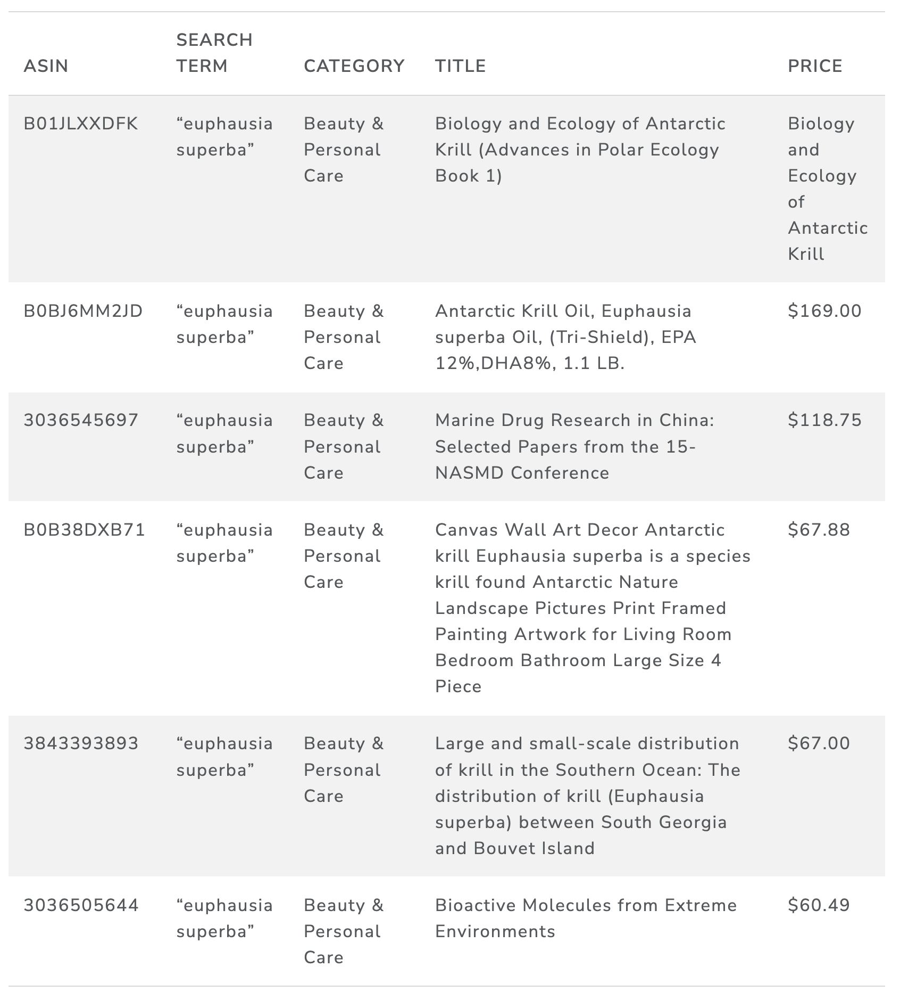
The majority of listings were irrelevant to our purposes. We first removed listings from our original return where stop words were present in the title. Stop words are words that, when present, indicate that it is highly unlikely that the listing is relevant to our present purposes. For example, the presence of words such as “book”, “microphone” or “sofa” in the title of the listing strongly suggest that the product referred to does not contain organic compounds. Table 26 is an example of the type of irrelevant listings that come through. After parsing our listings for stop words, 9,435 listings remained. These listings were returned as results relating to 1,817 of our original 4,000 species, though it was clear that many listings present still were not relevant. After the removal of duplicates, the remaining ASINS were then sent off through the Amazon API. 4,361 listings were returned. These were then joined onto our original listings.
Table 26: Examples of Junk Results
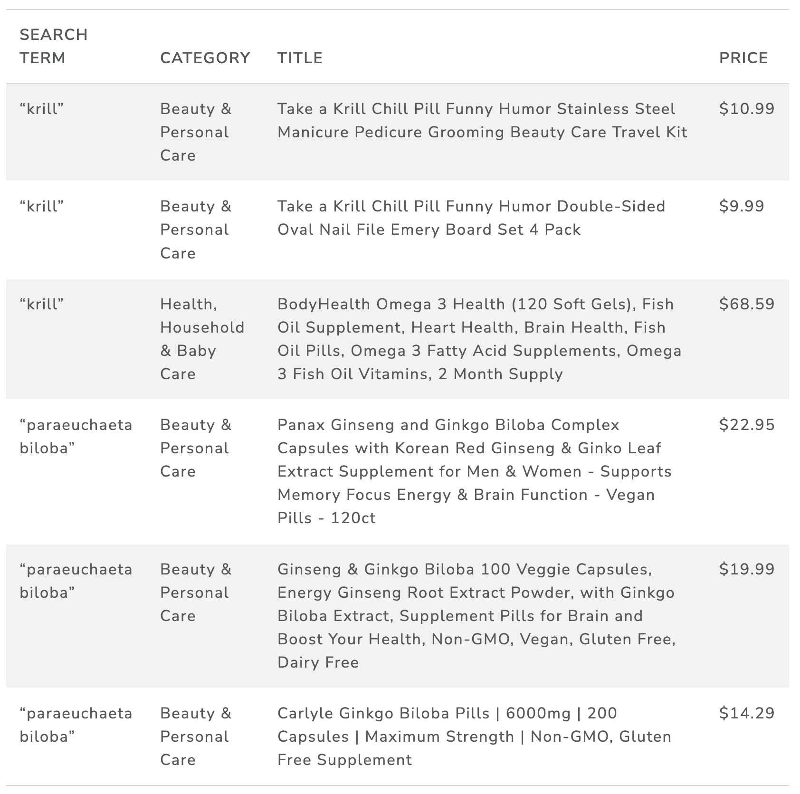
At this point, we had a table with the listing data and the search term (in most cases this was the taxonomic species name, in some cases this was the genus name or the common name). To improve thoroughness, and screen for cases in which a species was referred to in whole or in part by common name, but not by taxonomic name, we joined the table with a list of common names obtained from OBIS.
In order to find listings which matched at least one of our names, we filtered the listings to results which contained at least one word from the search term or common name. This likely included many results which still were not relevant. For example, search results for the species Radiella antarctica and Solanometra antarctica included lapel pins in the shape of Antarctica. This did however, allow us to exclude any listings which were categorically irrelevant. This resulted in 1,713 listings.
Due to the persistence of noise and junk at this level, results were then reduced further to only listings which contained either the full search term, or the full common name. This reduced results further still to 404 listings. Needless to say that from a starting point of 4,000 species names, this was not many. The species for which the most relevant results were found were mostly widely available species, which could be easily be collected from inside or outside EEZ.
Several listings were found for canned tuna species including skipjack tuna (Katsuwonus pelamis) and bigeye tuna (Thunnus obesus). Sea sponge species were found for sale for homeopathic purposes, including the use of roasted sea sponge for coughs, croup and breathing difficulties. Calcareous sponges were also found for sale for use in homeopathy, for the treatment of sprains, growing pains and acne. The roe of Cheilopogon heterurus, a species of flying fish, was also sold.
In the final return, we found 66 listings referring to krill species mostly Euphausia superba. Krill was marketed in the form of krill oil as a source of Omega-3 fatty acids for human consumption, and in some cases directly marketed towards women, with multiple health benefits ascribed to it. Listings also referred to the use of freeze dried krill as fish feed. Table 27 shows the final results for krill species.
Table 27: Final results for krill species
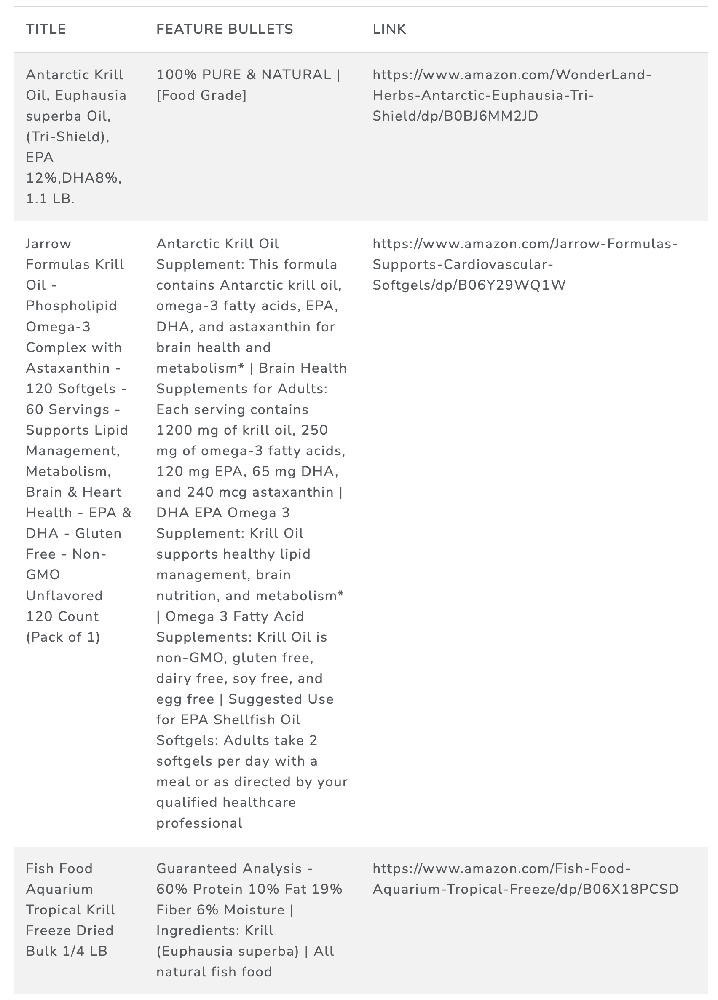
We found 28 listings for products related to sea cucumber species. These listings referred to sea cucumber extract, sea cucumber essence, or whole sea cucumber marketed for wellness benefits. Table 28 shows the final results for sea cucumber species.
Table 28: Final results for sea cucumber species (sample)
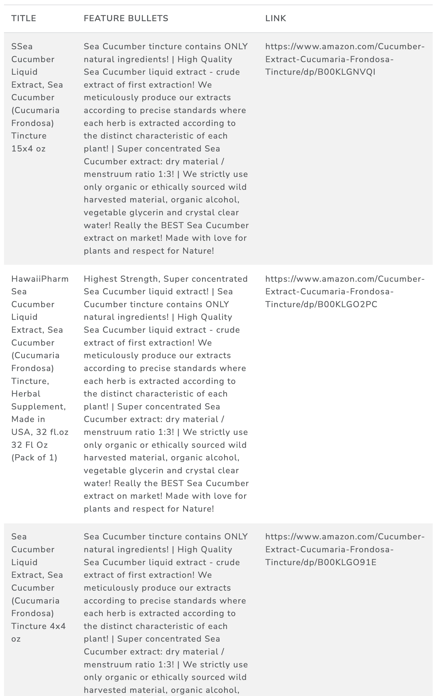
We found 14 listings for products related to species from the genus Calanus, a genus of marine copepods. Calanus oil appears most frequently as a source of Omega-3 fatty acids, marketed for human consumption for health benefits. Freeze dried calanus species were also found for sale for use as fish feed. Table 29 shows the results for calanus species.
Table 29: Final results for calanus species
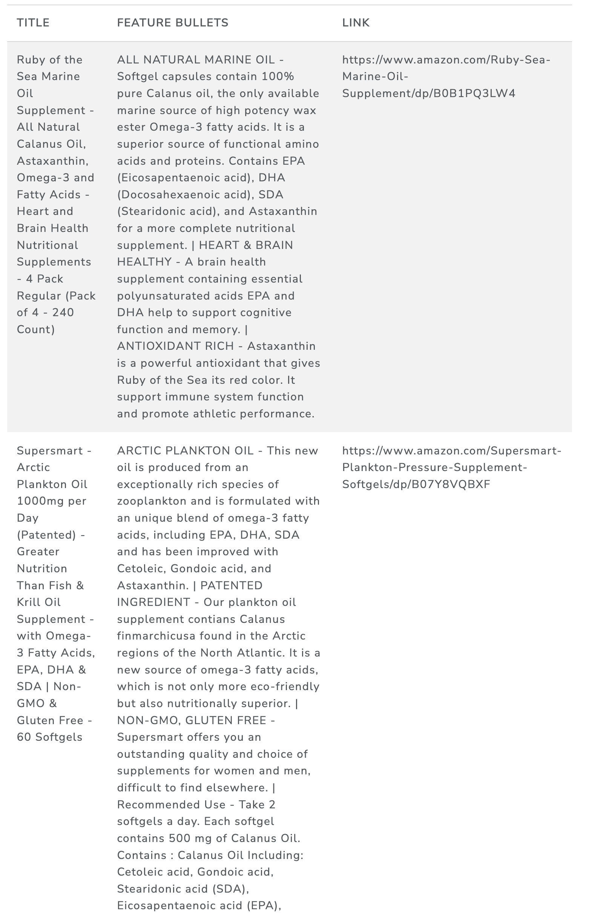
Figure 70 is a map of Calanus finmarchicus distribution courtesy of GBIF which shows that, while the species is most densely found within ABNJ, it is also found within the EEZ of several countries. This is also the case for many of the other widely distributed species for which results were found.
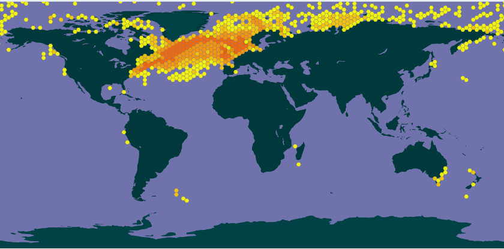
Figure 70: Distribution of calanus finmarchicus from GBIF
It does not seem that any species unique to ABNJ are apparent in the listings. If they are available on Amazon, they are not mentioned directly by name. This is not to say that products containing species unique to ABNJ are not available, but rather that they were not found in this search. It is also possible that products containing species unique to ABNJ are not available on Amazon, or that they are not available for sale at all.
Conclusion
In this section we have explored the appearance of marine genetic resources from ABNJ in hundreds of millions of web pages. To our knowledge this is the first time that this has been attempted. The growing availability of web scale data from the Common Crawl as part of the emergence of Large Language Models in Artificial Intelligence provides important opportunities to identify marine genetic resources at scale. As we have seen, this also offers opportunities to map and explore the multiple ways in which people interact with and value the marine environment.
Analysis of web data at this kind of scale is very challenging and AI tools which are trained using web scale data are well suited to supporting analysis of web activity. We engaged in an experiment with creating an online research agent that would access, assess and summarize relevant web pages. This experiment revealed that AI tools can be used to automate searching and summarizing information on marine organisms and can potentially be used for many thousands of species. However, a key limitation of automation using AI is data validation, that is: how do we know that the results returned by an AI model are true? This is an issue that is confronting many AI developers and will find an answer in approaches such as requiring written evidence, cross-validation of results using other models and human review of samples of the results. We should anticipate significant advances in quality control methods in future years. For the BBNJ treaty the use of AI offers opportunities to automate tasks such as researching the use of marine organisms, public awareness of the marine environment and the BBNJ Treaty, and automation of retrieval of information linked to the BBNJ Batch Identifier. In other words, AI promises to improve the ability to automate research and reporting tasks at scale.
An important limitation of web scale data and snapshots such as C4 relates to the technologies that are used to generate web pages. Thus, the reason that much of the content of the Common Crawl consists of pages of code rather than text is that many web pages are generated ‘on the fly’ when a visitor arrives at a site rather than existing as static html text. This is significant for research on the commercial use of marine genetic resources because it means that web snapshots such as C4 will be limited to those sites containing static, rather than dynamic, pages. As commercial sites are more likely to use dynamically generated pages the use of snapshots will be biased towards static sites such as news sites and university web pages. Recognition of this issue is an important outcome of the present research in using web scale snapshots. However, the use of automated research agents, which actively visit sites, could assist with overcoming this problem in future (subject to the terms and conditions of the sites visited). As such, it is important to be aware of both the limitations and opportunities for web scale research in the era of AI.
In a second independent experiment we explored the use of commercial AI and API services to automate search and summary of Amazon product listings. This experiment revealed that more widely known species such as krill will yield informative results. However, the efforts of commercial sites to always show the customer a results can confound efforts to identify activity for lesser known organisms by flooding the raw results with noise that is very difficult to control. Nevertheless, the promise of this approach is that it may be possible to gain an insight into the emergence of commercial products involving organisms from BBNJ.
The results presented in this section should therefore be seen as an initial experiment in exploring the possibilities of web scale research using AI for the automation of searches and reporting to support implementation of the BBNJ Treaty. We anticipate that these types of approaches, with due regard to the limitations and the need for appropriate controls, will become increasingly useful in informing policy decision-making in future years.
[1] https://en.wikipedia.org/wiki/Common_Crawl
[2] A more recent snapshot from the Allen Institute for AI is called MADLAD-400 (Multilingual Audited Dataset: Low-resource And Document-level and contains precleaned data until mid-2022. However, the dataset does not contain the url for the web-based texts which limits its utility for our purposes. The full dataset is also 7 terabytes in size.
[3] Search Engine Optimization (SEO) is a widespread practice and increasingly uses AI in order to bump up the presence of a page to the top of search results with search engines such as Google or Bing. Search engines now automatically penalise well known practices such as keyword stuffing. However, this does not mean that people will not attempt it or similar practices.
[4] Patent applicants are simultaneously noisy, in that they may be expressed in a variety of forms, and dynamic. The use of an AI assisted ‘company to domain name matcher’ revealed that a significant number of companies do not have an obvious public site on the web, have been acquired by other companies or have gone out of business. Traces of these companies were typically found in business news websites and listings. We did not pursue those names further.
A more recent snapshot from the Allen Institute for AI is called MADLAD-400 (Multilingual Audited Dataset: Low-resource And Document-level) and contains precleaned data until mid-2022. However, the dataset does not contain the url for the web-based texts which limits its utility for our purposes. The full dataset is also 7 terabytes in size.↩︎
Search Engine Optimization (SEO) is a widespread practice and increasingly uses AI in order to bump up the presence of a page to the top of search results with search engines such as Google or Bing. Search engines now automatically penalise well known practices such as keyword stuffing. However, this does not mean that people will not attempt it or similar practices.↩︎
Patent applicants are simultaneously noisy, in that they may be expressed in a variety of forms, and dynamic. The use of an AI assisted ‘company to domain name matcher’ revealed that a significant number of companies do not have an obvious public site on the web, have been acquired by other companies or have gone out of business. Traces of these companies were typically found in business news websites and listings. We did not pursue those names further.↩︎